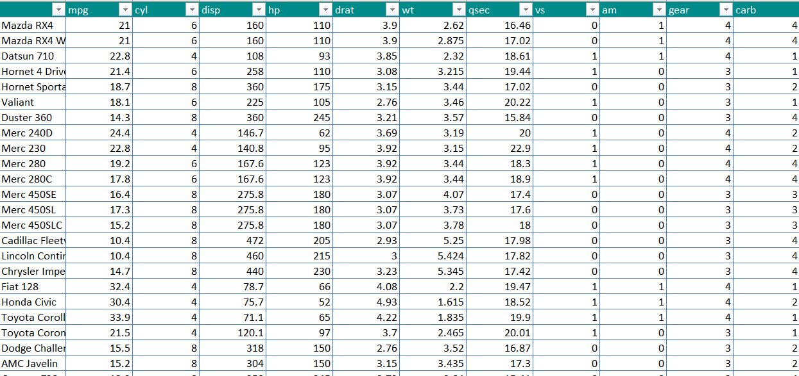

| 函数名 | 功能 |
|---|---|
| createWorkbook | 创建一个工作簿 |
| addWorksheet | 为工作簿添加一个工作表 |
| mergeCells | 合并单元格 |
| makeHyperlinkString | 创建超链接 |
| writeData | 将数据写入到工作表 |
| insertImage | 将图片插入到工作表 |
| insertPlot | 将当前绘图插入到工作表 |
| getSheetNames | 获取工作表名字 |
| renameWorksheet | 重命名工作表 |
| conditionalFormat | 为单元格添加条件格式 |
| addStyle | 为单元格设置格式 |
| addFilter | 为工作表添加筛选功能 |
| replaceStyle | 替换单元格格式 |
| freezePane | 冻结工作表窗口 |
| worksheetOrder | 对工作表进行排序 |
| modifyBaseFont | 设置默认字体 |
| saveWorkbook | 保存工作簿到文件 |
| setRowHeights | 设置工作表行高 |
| showGridLines | 隐藏网格线 |
| setColWidths | 设置工作表列宽 |
使用createWorkbook()创建一个Excel工作簿，然后使用saveWorkbook()将工作簿保存到本地文件夹中。
library(openxlsx)
wb <- createWorkbook()
saveWorkbook(wb, file = 'test.xlsx', overwrite = T)## Warning: Workbook does not contain any worksheets. A worksheet will be added.addWorksheet(wb, "iris") #在Excel表中增加iris工作表
iris_head <- head(iris, 20)
#查看iris的前20行
writeData(wb, #之前创建的Excel表
"iris", #指定写入数据的工作表
iris_head, #要写入工作表的数据
startCol = 1, #从哪一列开始写入数据
startRow = 1, #从哪一行开始写入数据
rowNames = TRUE #写入数据框的行名
)
saveWorkbook(wb,
file = 'test.xlsx',
overwrite =TRUE)
#为TRUE时覆盖已经存在的文件data <- read.xlsx('test.xlsx', #要读取的xlsx文件
sheet = 2,
detectDates = TRUE, #识别日期数据并进行转换
fillMergedCells = TRUE)#若为TRUE,则合并单元格中的值将其提供给合并的所有单元格。head(data)## Sepal.Length Sepal.Width Petal.Length Petal.Width Species
## 1 1 5.1 3.5 1.4 0.2 setosa
## 2 2 4.9 3.0 1.4 0.2 setosa
## 3 3 4.7 3.2 1.3 0.2 setosa
## 4 4 4.6 3.1 1.5 0.2 setosa
## 5 5 5.0 3.6 1.4 0.2 setosa
## 6 6 5.4 3.9 1.7 0.4 setosa以mtcars数据集为例。先将数据集插入到以car命名的另一个工作表中，并对各列创建筛选器。
wb <- createWorkbook()
addWorksheet(wb, "car")
writeData(wb,
"car",
mtcars,
startCol = 1,
startRow = 1,
rowNames = T)
addFilter(wb, #指定Excel表
1, #指定具体工作表进行筛选，这里通过数字来指定
row = 1, #行数
cols = 1:ncol(mtcars)#列数
)
saveWorkbook(wb,
file = 'mtcars.xlsx',
overwrite = T)对上文的数据表，进行如下表格格式修改：
修改表头背景
表格线框修改为蓝色，底部边框修改为双线型
表格背景修改为斑马色
style <- createStyle(fgFill = "#008B8B",
fontColour = "#FFFFFF")
addStyle(wb,
sheet = 'car',
style = style,
rows = 1,
cols = 1:(ncol(mtcars) + 1),
gridExpand = TRUE)
saveWorkbook(wb,
file = 'mtcars.xlsx',
overwrite = T)style2 <- createStyle(
borderColour = "#4F81BD",
border='TopBottomLeftRight')
addStyle(wb,
sheet = 'car',
style=style2,
rows = 2:(nrow(mtcars)+1),
cols = 1:(ncol(mtcars)+1),
gridExpand = TRUE)
saveWorkbook(wb,
file='mtcars.xlsx',
overwrite = T)